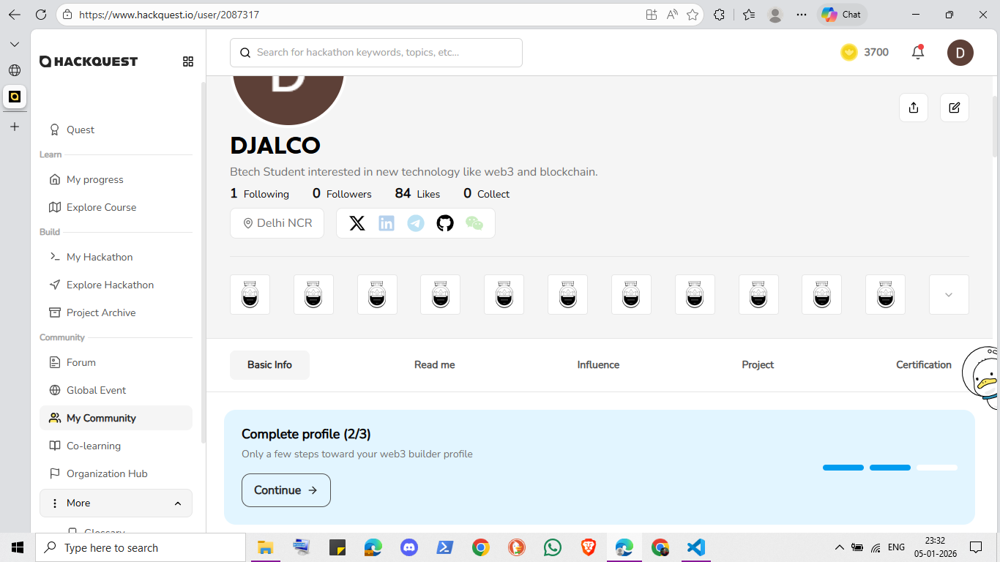
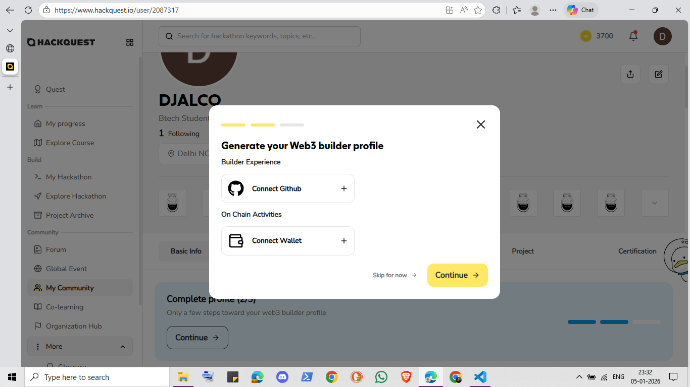

GitHub Connection Status Bug
Reported On: 04/01/2026
Bug Summary
There is an inconsistency in how the platform displays the GitHub connection status across different sections of the profile.
- Complete Profile section shows GitHub as Not Connected even after multiple attempts.
- Social Links correctly shows GitHub as Connected.
- Developer Activity displays commits from the connected GitHub account.
Observed Behavior
Status Mismatch UI Issue Sync Problem| Section | Displayed Status | Actual State | Result |
|---|---|---|---|
| Complete Profile | Not Connected | Connected | Incorrect |
| Social Links | Connected | Connected | Correct |
| Developer Activity | Commits Visible | Commits Fetched | Correct |
Impact
- Misleading profile completion status
- User confusion regarding GitHub integration
- Repeated reconnection attempts despite valid auth
This strongly indicates a frontend or profile-completion flag not updating correctly after successful GitHub authentication.
Steps to Reproduce
- Connect a GitHub account successfully.
- Verify GitHub appears under Social Links.
- Open the Complete Profile section.
- Observe GitHub marked as Not Connected.
- Check Developer Activity for commit data.
Attached Evidence


.png)